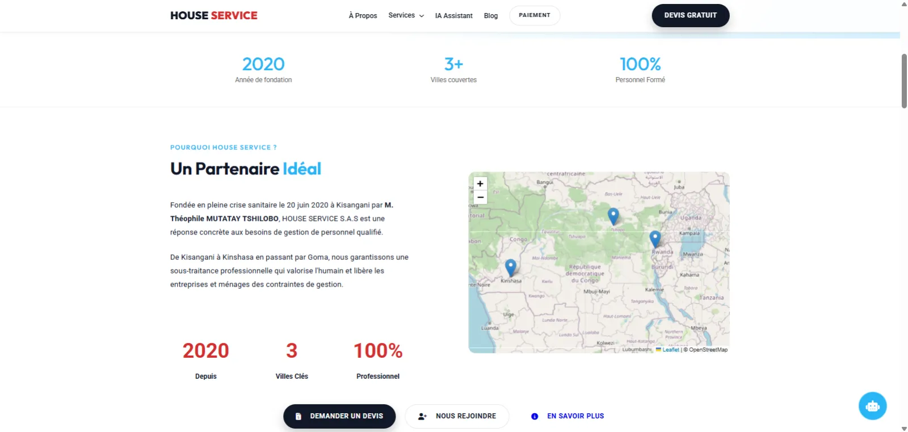

Étude de cas 03 / 07Services
House Service
Une entreprise de sous-traitance qui place du personnel de maison, d'entreprise et spécialisé. Le site devait rassurer les familles et les entreprises, puis transformer l'intérêt en demande de devis.

01Le besoin
Confier sa maison ou ses locaux à une personne extérieure demande de la confiance. House Service avait besoin d'un site qui présente un catalogue de services large, prouve le sérieux de l'entreprise et simplifie la demande de devis et le paiement.
02Ce que j'ai construit
- Catalogue de services : maison, entreprise, personnel spécialisé, sur mesure, offre premium et vidange
- Demande de devis gratuit en ligne et appel direct
- Paiement par Mobile Money (Airtel, M-Pesa, Orange) ou virement, avec envoi de la preuve par WhatsApp
- Vérification d'un agent par son nom, pour confirmer qu'il travaille bien pour l'entreprise
- Recrutement et formations pour les futurs agents
- Fiches d'évaluation, questions fréquentes, témoignages et blog
- Assistant conversationnel pour répondre aux premières questions
03Les choix de conception
- Le paiement passe par Mobile Money, le moyen que les clients utilisent déjà au quotidien.
- La vérification d'agent répond directement à la première inquiétude des familles : « qui entre chez moi ? »
04Le site en ligne
Technologies et outils : Site web · Paiement Mobile Money.
Un projet du même genre ?
Parlons-en.
Vous n'avez pas besoin de savoir comment le construire. Dites-moi simplement ce que vous voulez améliorer.